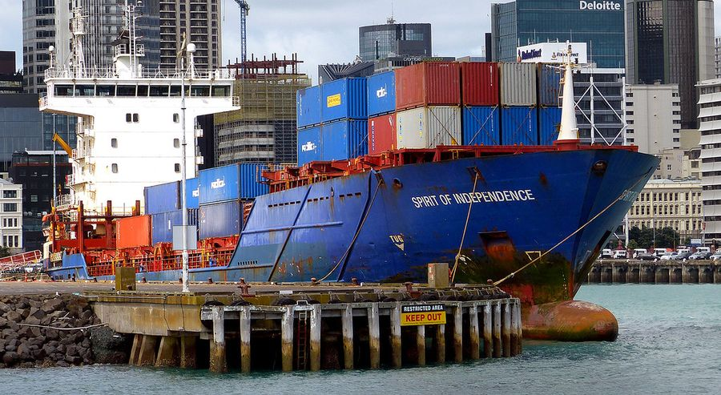

Amazonのベストバーゲン32選、2026年ブラックフライデーの11月26日限定：最大65％オフLos 32 mejores chollos de Amazon solo este 26 de noviembre en Black Friday 2026: rebajas de hasta el 65%割引終了まであと数日しかない。私たちのリストから、あなたが欲しく、自分にふさわしいちょっとした贅沢品や、ずっと探していた贈り物を見つけよう。
Amazonのベストバーゲン32選、2026年ブラックフライデーの11月26日限定：最大65％オフLos 32 mejores chollos de Amazon solo este 26 de noviembre en Black Friday 2026: rebajas de hasta el 65%割引終了まであと数日しかない。私たちのリストから、あなたが欲しく、自分にふさわしいちょっとした贅沢品や、ずっと探していた贈り物を見つけよう。 メリダとホダル、新たな風とイギリスとの準決勝Mérida y Jódar, nuevos vientos y unas semifinales contra Gran Bretaña前者は巧みなプレーでシュワルツラーを破り（6-4、6-4）、後者はラディオノフ相手に悪いスタートから巻き返した（2-6、6-0、6-1）。土曜日には、ドイツを破った相手と
メリダとホダル、新たな風とイギリスとの準決勝Mérida y Jódar, nuevos vientos y unas semifinales contra Gran Bretaña前者は巧みなプレーでシュワルツラーを破り（6-4、6-4）、後者はラディオノフ相手に悪いスタートから巻き返した（2-6、6-0、6-1）。土曜日には、ドイツを破った相手と スペイン、モンテネグロで好調なプレーを見せ、カタール・ワールドカップへまた一歩前進España se gusta en Montenegro y da otro pasito más hacia el Mundial de Qatar代表チームはポドゴリツァで最良のパフォーマンスを発揮し、ワールドカップ予選で6勝目を挙げた。オリオラが地元チームを打ち破り
スペイン、モンテネグロで好調なプレーを見せ、カタール・ワールドカップへまた一歩前進España se gusta en Montenegro y da otro pasito más hacia el Mundial de Qatar代表チームはポドゴリツァで最良のパフォーマンスを発揮し、ワールドカップ予選で6勝目を挙げた。オリオラが地元チームを打ち破り 『GTA VI』をプレイする年配の男性Un señor mayor jugando al GTA VIとにかく巨大なこのビデオゲームに1週間向き合った末、現実を受け入れる時が来た。犯罪はもはや私には向いていない。続きを読む
『GTA VI』をプレイする年配の男性Un señor mayor jugando al GTA VIとにかく巨大なこのビデオゲームに1週間向き合った末、現実を受け入れる時が来た。犯罪はもはや私には向いていない。続きを読む ロンドンに欠けていた偉大な博物館、それはロンドン自身の歴史の博物館El gran museo que le faltaba a Londres: el de su propia historiaこれまでバービカン・センター内に埋もれ、ほぼ秘密の存在だった市の博物館が、見事に修復されたビクトリア朝時代の市場である新たな拠点を開く。
ロンドンに欠けていた偉大な博物館、それはロンドン自身の歴史の博物館El gran museo que le faltaba a Londres: el de su propia historiaこれまでバービカン・センター内に埋もれ、ほぼ秘密の存在だった市の博物館が、見事に修復されたビクトリア朝時代の市場である新たな拠点を開く。 ザ・ストロークス、テーム・インパラ、フェイス・ノー・モア、The XXがMad Cool 2027のヘッドライナーを務めるThe Strokes, Tame Impala, Faith No More y The XX encabezan el cartel de Mad Cool 2027このマドリードのフェスティバルは7月7日から10日まで開催され、23,000人収容の新しいスタンドが設けられ、最大収容人数は57,000人となる。続きを読む
ザ・ストロークス、テーム・インパラ、フェイス・ノー・モア、The XXがMad Cool 2027のヘッドライナーを務めるThe Strokes, Tame Impala, Faith No More y The XX encabezan el cartel de Mad Cool 2027このマドリードのフェスティバルは7月7日から10日まで開催され、23,000人収容の新しいスタンドが設けられ、最大収容人数は57,000人となる。続きを読む 捜査対象となったマフィアと戦う英雄、デ・ジェンナーロ元警察長官の別れの手紙：「死刑囚は嘘をつくことはできない」La carta de despedida del ex jefe Policía De Gennaro, el héroe contra la mafia investigado: "Un condenado a muerte no puede mentir"ジョヴァンニ・デ・ジェンナーロ氏は、司法妨害の疑いで捜査されていることを知り、自ら命を絶った。その数日前、彼は8ページにわたる手紙を書いていた。
捜査対象となったマフィアと戦う英雄、デ・ジェンナーロ元警察長官の別れの手紙：「死刑囚は嘘をつくことはできない」La carta de despedida del ex jefe Policía De Gennaro, el héroe contra la mafia investigado: "Un condenado a muerte no puede mentir"ジョヴァンニ・デ・ジェンナーロ氏は、司法妨害の疑いで捜査されていることを知り、自ら命を絶った。その数日前、彼は8ページにわたる手紙を書いていた。 チーム一丸となったスペイン、モンテネグロで勢いを取り戻すUna España muy coral recobra el pulso en Montenegroチュス・マテオ監督率いる代表チームは62-93で勝利し、2027年ワールドカップ予選で大きく前進した
チーム一丸となったスペイン、モンテネグロで勢いを取り戻すUna España muy coral recobra el pulso en Montenegroチュス・マテオ監督率いる代表チームは62-93で勝利し、2027年ワールドカップ予選で大きく前進した 国営宝くじ：11月26日木曜日の抽選結果を確認Lotería Nacional: comprobar sorteo del jueves 26 de noviembre国営宝くじ・賭博公社は今週木曜日、国営宝くじの抽選でデシモ1枚あたり30,000ユーロの1等賞を配分する
国営宝くじ：11月26日木曜日の抽選結果を確認Lotería Nacional: comprobar sorteo del jueves 26 de noviembre国営宝くじ・賭博公社は今週木曜日、国営宝くじの抽選でデシモ1枚あたり30,000ユーロの1等賞を配分する EU、ル・ペン氏がフランスで政権を握る可能性を前に予算承認に苦慮La UE lucha por aprobar un presupuesto antes de la posible llegada de Le Pen al poder en Franciaドイツのメルツ首相はウクライナ支援における全員一致の連帯を求めるが、4カ国が難色を示している：ハンガリー、スロバキア、チェコ共和国、ブルガリア
EU、ル・ペン氏がフランスで政権を握る可能性を前に予算承認に苦慮La UE lucha por aprobar un presupuesto antes de la posible llegada de Le Pen al poder en Franciaドイツのメルツ首相はウクライナ支援における全員一致の連帯を求めるが、4カ国が難色を示している：ハンガリー、スロバキア、チェコ共和国、ブルガリア セルタ、欧州で敗れ、10人のボーンマスに勝利を献上El Celta sucumbe en Europa y regala una victoria a un Bournemouth con diez先制し、70分間数的優位で戦ったクラウディオ・ヒラルデス監督のチームは、残り3節となり、突破がより困難になった
セルタ、欧州で敗れ、10人のボーンマスに勝利を献上El Celta sucumbe en Europa y regala una victoria a un Bournemouth con diez先制し、70分間数的優位で戦ったクラウディオ・ヒラルデス監督のチームは、残り3節となり、突破がより困難になった 欧州で二重のつまずき：ヘタフェはジョージアで敗れ、ボーンマスがバライドスを攻略Doble tropiezo europeo: el Getafe cae en Georgia y el Bournemouth asalta Balaídosアスパスが先制点をもたらしたが、22分から1人多い状況でもリードを維持できなかった。ボルダラスもデビュー戦を飾ることはできなかった。
欧州で二重のつまずき：ヘタフェはジョージアで敗れ、ボーンマスがバライドスを攻略Doble tropiezo europeo: el Getafe cae en Georgia y el Bournemouth asalta Balaídosアスパスが先制点をもたらしたが、22分から1人多い状況でもリードを維持できなかった。ボルダラスもデビュー戦を飾ることはできなかった。 船はイビサ沖でバラストタンクへの大量の浸水により難破、流出はなく、安全な港への曳航が検討されているEl buque naufragó ante las costas de Ibiza por una entrada masiva de agua en los tanques de lastre, no hay vertido y se estudia remolcarlo a un puerto seguroエレーナ・デルガド海事責任者が確認したところによると、今朝確認された2.6マイルに及ぶ油膜は分解し、消滅した。続きを読む
船はイビサ沖でバラストタンクへの大量の浸水により難破、流出はなく、安全な港への曳航が検討されているEl buque naufragó ante las costas de Ibiza por una entrada masiva de agua en los tanques de lastre, no hay vertido y se estudia remolcarlo a un puerto seguroエレーナ・デルガド海事責任者が確認したところによると、今朝確認された2.6マイルに及ぶ油膜は分解し、消滅した。続きを読む イーサン・ホーク：「今は皮肉屋でなければ愚か者扱いされる」Ethan Hawke: "Hoy si no eres un cínico te toman por estúpido"『Oro sin ley』が公開されるこの俳優は、冒険映画の価値を訴え、善意が（全般的に）置かれている苦しい状況について振り返り、光栄に感じていることを打ち明ける。
イーサン・ホーク：「今は皮肉屋でなければ愚か者扱いされる」Ethan Hawke: "Hoy si no eres un cínico te toman por estúpido"『Oro sin ley』が公開されるこの俳優は、冒険映画の価値を訴え、善意が（全般的に）置かれている苦しい状況について振り返り、光栄に感じていることを打ち明ける。 選挙管理委員会、プエルタ・デル・ソルの立ち退き後のサンチェス氏を批判する動画をめぐりアユソ氏に対する手続きを開始La Junta Electoral abre un expediente a Ayuso por un vídeo contra Sánchez tras el desalojo de la Puerta del Sol選挙機関は州選挙管理委員会の決定を取り消し、「暴力行為」とされる行為について首相に責任があるとした会長について判断を下した。
選挙管理委員会、プエルタ・デル・ソルの立ち退き後のサンチェス氏を批判する動画をめぐりアユソ氏に対する手続きを開始La Junta Electoral abre un expediente a Ayuso por un vídeo contra Sánchez tras el desalojo de la Puerta del Sol選挙機関は州選挙管理委員会の決定を取り消し、「暴力行為」とされる行為について首相に責任があるとした会長について判断を下した。 マルティン・エスコラール、100回出場まであと5番組のところで『Saber y Ganar』から敗退Martín Escolar queda eliminado de ‘Saber y Ganar’ a cinco programas de ser centenarioLa 2の番組はこの木曜日、最も人気のある出場者に別れを告げた。
マルティン・エスコラール、100回出場まであと5番組のところで『Saber y Ganar』から敗退Martín Escolar queda eliminado de ‘Saber y Ganar’ a cinco programas de ser centenarioLa 2の番組はこの木曜日、最も人気のある出場者に別れを告げた。 生中継｜Amazonやその他のオンラインストアのブラックフライデーの最良のセール、1分ごとに更新Directo | Las mejores ofertas de Black Friday en Amazon y otras tiendas ‘online’, actualizadas minuto a minuto一年で最も待ち望まれた、低価格と大幅割引の一日が始まる！主要な買い物カテゴリーで最も魅力的なお買い得品を見つけよう。
生中継｜Amazonやその他のオンラインストアのブラックフライデーの最良のセール、1分ごとに更新Directo | Las mejores ofertas de Black Friday en Amazon y otras tiendas ‘online’, actualizadas minuto a minuto一年で最も待ち望まれた、低価格と大幅割引の一日が始まる！主要な買い物カテゴリーで最も魅力的なお買い得品を見つけよう。 29-Nの4者選挙討論会、生中継｜アバスカル氏、選挙戦最後の討論会に最初に到着した候補者Debate electoral 29-N a cuatro, en directo | Abascal, el primer candidato en llegar al último debate de campañaPSOE、PP、VOX、フレンテ・アンプリオの候補者が、テレビ・アカデミーが主催する会合で対決する。
29-Nの4者選挙討論会、生中継｜アバスカル氏、選挙戦最後の討論会に最初に到着した候補者Debate electoral 29-N a cuatro, en directo | Abascal, el primer candidato en llegar al último debate de campañaPSOE、PP、VOX、フレンテ・アンプリオの候補者が、テレビ・アカデミーが主催する会合で対決する。 ノルウェーのハーラル国王が死去した病院の広報責任者が解任、マリウス・ボルグの同施設での画像流出を受けてDespedido el responsable de prensa del hospital donde murió Harald de Noruega tras la filtración de imágenes de Marius Borg en el centro日刊紙『Dagbladet』が独占で報じたところによると、63歳のアンデルス・バイエル氏は国王の死去の数時間前に解任された。引き金となったのは、別の写真が…
ノルウェーのハーラル国王が死去した病院の広報責任者が解任、マリウス・ボルグの同施設での画像流出を受けてDespedido el responsable de prensa del hospital donde murió Harald de Noruega tras la filtración de imágenes de Marius Borg en el centro日刊紙『Dagbladet』が独占で報じたところによると、63歳のアンデルス・バイエル氏は国王の死去の数時間前に解任された。引き金となったのは、別の写真が… コルドと家族は引き続き起訴状態：全国裁判所が棄却請求を却下Koldo y familia permanecen imputados: la Audiencia Nacional rechaza sus peticiones de sobreseimientoモレノ判事は、コルドの元妻と兄を捜査するには十分な手がかりがあること、そしてコルドを引き続き起訴状態に置く根拠となる事実があることを強調した
コルドと家族は引き続き起訴状態：全国裁判所が棄却請求を却下Koldo y familia permanecen imputados: la Audiencia Nacional rechaza sus peticiones de sobreseimientoモレノ判事は、コルドの元妻と兄を捜査するには十分な手がかりがあること、そしてコルドを引き続き起訴状態に置く根拠となる事実があることを強調した スペインのパイロットの半数が、勤務する航空会社は自分たちの心の健康に配慮していないと考えているLa mitad de los pilotos en España considera que la aerolínea donde trabajan no se preocupa por su bienestar emocionalパイロット組合Seplaの調査により、航空会社によるメンタルヘルス管理に対する全般的な評価の低さが明らかになった。続きを読む
スペインのパイロットの半数が、勤務する航空会社は自分たちの心の健康に配慮していないと考えているLa mitad de los pilotos en España considera que la aerolínea donde trabajan no se preocupa por su bienestar emocionalパイロット組合Seplaの調査により、航空会社によるメンタルヘルス管理に対する全般的な評価の低さが明らかになった。続きを読む 被害者2人がボリビアでフランセスク・ペリスを告発、少なくとも22人の未成年者への性的虐待で告発されたカタルーニャ出身のイエズス会士Dos víctimas denuncian en Bolivia a Francesc Peris, el jesuita catalán acusado de abusar de al menos 22 menoresチェスコとして知られるその司祭は、南米の同国で1年間過ごした。スペインでも浮上した児童への性的虐待の告発により、イエズス会から追放された
被害者2人がボリビアでフランセスク・ペリスを告発、少なくとも22人の未成年者への性的虐待で告発されたカタルーニャ出身のイエズス会士Dos víctimas denuncian en Bolivia a Francesc Peris, el jesuita catalán acusado de abusar de al menos 22 menoresチェスコとして知られるその司祭は、南米の同国で1年間過ごした。スペインでも浮上した児童への性的虐待の告発により、イエズス会から追放された 労働組合、買い手探しの難航を受けプルス・ウルトラの即時閉鎖を懸念Los sindicatos temen un cierre exprés de Plus Ultra ante las dificultades para encontrar un comprador労働者委員会は同社の決算に疑問を呈し、雇用調整手続きの再開を求めている
労働組合、買い手探しの難航を受けプルス・ウルトラの即時閉鎖を懸念Los sindicatos temen un cierre exprés de Plus Ultra ante las dificultades para encontrar un comprador労働者委員会は同社の決算に疑問を呈し、雇用調整手続きの再開を求めている ニネスの悲劇：30年前に代金を支払った家からの立ち退き寸前、登記簿では今も建設会社の名義だったためEl drama de Nines: al borde del desahucio de una casa que pagó hace 30 años porque seguía figurando a nombre de la constructora en el Registro de la Propiedad立ち上げを推進した不動産投資家の「クラブ」であるEON Capitalは、個人から5000ユーロから資金を集め、…のリターンをうたっている
ニネスの悲劇：30年前に代金を支払った家からの立ち退き寸前、登記簿では今も建設会社の名義だったためEl drama de Nines: al borde del desahucio de una casa que pagó hace 30 años porque seguía figurando a nombre de la constructora en el Registro de la Propiedad立ち上げを推進した不動産投資家の「クラブ」であるEON Capitalは、個人から5000ユーロから資金を集め、…のリターンをうたっている マコーレー・カルキンの兄弟である俳優ロリー・カルキン、父親との関係について：「彼はとても不快な人だった。幸運にも、家族の中での彼の思い出はほとんどない」Rory Culkin, actor y hermano de Macauley Culkin, sobre la relación con su padre: "Era muy desagradable. Tengo la suerte de tener muy pocos recuerdos de él en la familia"俳優は、父親が子どもたちを通じて成功を収めようとしたと断言している。続きを読む
マコーレー・カルキンの兄弟である俳優ロリー・カルキン、父親との関係について：「彼はとても不快な人だった。幸運にも、家族の中での彼の思い出はほとんどない」Rory Culkin, actor y hermano de Macauley Culkin, sobre la relación con su padre: "Era muy desagradable. Tengo la suerte de tener muy pocos recuerdos de él en la familia"俳優は、父親が子どもたちを通じて成功を収めようとしたと断言している。続きを読む ムルシアの社会党市議会議員、13歳のときの苦難を語り否定論を非難：「継続的な性的暴行を受けた」Una concejala socialista de Murcia relata su calvario cuando tenía 13 años y carga contra el negacionismo : "Sufrí una agresión sexual continuada"アンドレア・ペニャランダは市議会で、家族の一員から受けた虐待について語った。「殺しに来なかったのは幸運だった。それでも、私は背負い続けている
ムルシアの社会党市議会議員、13歳のときの苦難を語り否定論を非難：「継続的な性的暴行を受けた」Una concejala socialista de Murcia relata su calvario cuando tenía 13 años y carga contra el negacionismo : "Sufrí una agresión sexual continuada"アンドレア・ペニャランダは市議会で、家族の一員から受けた虐待について語った。「殺しに来なかったのは幸運だった。それでも、私は背負い続けている モレノ氏、アデランテ・アンダルシアを批判「ビルドゥとERCを真似ている」Moreno carga contra Adelante Andalucía: “Imitan a Bildu y a ERC”各会派はアンダルシア州議会本会議での発言を集会のような場に変えている
モレノ氏、アデランテ・アンダルシアを批判「ビルドゥとERCを真似ている」Moreno carga contra Adelante Andalucía: “Imitan a Bildu y a ERC”各会派はアンダルシア州議会本会議での発言を集会のような場に変えている フェラン・バッサス、「ピックルボール」のコートを作るスペイン代表ポイントガードFerran Bassas, el base de España que monta pistas de ‘pickleball’マンレサ所属の同選手は、代表チームにおける中堅層の価値を象徴している。代表は今週木曜日、モンテネグロで重要な一戦に臨む
フェラン・バッサス、「ピックルボール」のコートを作るスペイン代表ポイントガードFerran Bassas, el base de España que monta pistas de ‘pickleball’マンレサ所属の同選手は、代表チームにおける中堅層の価値を象徴している。代表は今週木曜日、モンテネグロで重要な一戦に臨む メリダ、デビュー戦の緊張を克服し、デビスカップでスペインにオーストリア戦のリードをもたらすMérida supera los nervios de su estreno y adelanta a España ante Austria en la Copa Davis若手選手は序盤、ジョエル・シュヴェルツラーの攻勢に驚かされたが、最終的にはベースラインから優位性を発揮した。ホダルがロディオノフを破れば、
メリダ、デビュー戦の緊張を克服し、デビスカップでスペインにオーストリア戦のリードをもたらすMérida supera los nervios de su estreno y adelanta a España ante Austria en la Copa Davis若手選手は序盤、ジョエル・シュヴェルツラーの攻勢に驚かされたが、最終的にはベースラインから優位性を発揮した。ホダルがロディオノフを破れば、 エル・コルテ・イングレス、セキュリタスと決別し、警備をシコールに委ねるEl Corte Inglés rompe con Securitas y deja su seguridad en manos de Sicorスウェーデンの同社は約2,000人の従業員で百貨店の半分の警備を担っていたが、その従業員たちは今後、グループの子会社に移る…
エル・コルテ・イングレス、セキュリタスと決別し、警備をシコールに委ねるEl Corte Inglés rompe con Securitas y deja su seguridad en manos de Sicorスウェーデンの同社は約2,000人の従業員で百貨店の半分の警備を担っていたが、その従業員たちは今後、グループの子会社に移る… 法医学者が、ムルシアで鎮静状態の患者を強姦したとして告発された外科医の生物学的痕跡の存在を確認El forense confirma la presencia de restos biológicos del cirujano acusado de violar a una paciente sedada en Murcia国立毒性学研究所は、女性の性器で見つかった精液の痕跡は医師のものだとしている。一方、新たな警察の分析が確認している
法医学者が、ムルシアで鎮静状態の患者を強姦したとして告発された外科医の生物学的痕跡の存在を確認El forense confirma la presencia de restos biológicos del cirujano acusado de violar a una paciente sedada en Murcia国立毒性学研究所は、女性の性器で見つかった精液の痕跡は医師のものだとしている。一方、新たな警察の分析が確認している ETAに立ち向かったアンドアインの社会党市長で、デ・ラカジェとホセバ「パガサ」の友人だったエスタニス・アムチャステギ氏が死去Muere Estanis Amutxastegi, el alcalde socialista de Andoain, amigo de De Lacalle y de Joseba 'Pagaza' que se enfrentó a ETA「アベルツァレ」左派は、市長になる（2009～2011年）前に彼を標的にし、彼は自宅アパートと車に放火された。「エスタニスはすべてだった。絶対的な模範 p…
ETAに立ち向かったアンドアインの社会党市長で、デ・ラカジェとホセバ「パガサ」の友人だったエスタニス・アムチャステギ氏が死去Muere Estanis Amutxastegi, el alcalde socialista de Andoain, amigo de De Lacalle y de Joseba 'Pagaza' que se enfrentó a ETA「アベルツァレ」左派は、市長になる（2009～2011年）前に彼を標的にし、彼は自宅アパートと車に放火された。「エスタニスはすべてだった。絶対的な模範 p… メキシコ政府、スペインにイネス・ゴメス・モントに関する犯罪人引渡し条約の適用を求めるEl Gobierno mexicano pide a España que aplique el tratado de extradición con Inés Gómez Mont検察は、司会者が拘束されていないことを確認し、メキシコへの送還のため、その逮捕を正式に求めた
メキシコ政府、スペインにイネス・ゴメス・モントに関する犯罪人引渡し条約の適用を求めるEl Gobierno mexicano pide a España que aplique el tratado de extradición con Inés Gómez Mont検察は、司会者が拘束されていないことを確認し、メキシコへの送還のため、その逮捕を正式に求めた 教皇、エレーナ王女とともに闘牛関係の司祭とチャプレンを迎え、カポーテとサモラの毛布を贈られるEl Papa recibe a sacerdotes y capellanes taurinos junto con la infanta Elena y le regalan un capote y una manta zamoranaカポーテのエスクラビーナにはバチカンの紋章が刻まれており、ナバス・デル・レイの闘牛学校が闘牛士の仕立師フェルミンに特注したものだ
教皇、エレーナ王女とともに闘牛関係の司祭とチャプレンを迎え、カポーテとサモラの毛布を贈られるEl Papa recibe a sacerdotes y capellanes taurinos junto con la infanta Elena y le regalan un capote y una manta zamoranaカポーテのエスクラビーナにはバチカンの紋章が刻まれており、ナバス・デル・レイの闘牛学校が闘牛士の仕立師フェルミンに特注したものだ 惑星がまた一つのレッドラインを越える：温暖化が2度を上回る状態が1週間続くEl planeta cruza otra línea roja: una semana seguida por encima de los dos grados de calentamiento気候サミットが行き詰まるのと同時に、地球はこの水準に10日間達し、そのうち7日間は連続していた。
惑星がまた一つのレッドラインを越える：温暖化が2度を上回る状態が1週間続くEl planeta cruza otra línea roja: una semana seguida por encima de los dos grados de calentamiento気候サミットが行き詰まるのと同時に、地球はこの水準に10日間達し、そのうち7日間は連続していた。 『姉妹』：家族内での性的虐待を描く、外科手術のように精密なドラマ（***）Hermanas: Un drama quirúrgico sobre los abusos sexuales en la familia (***)エレナ・アナヤとエマ・スアレスが、厳密で徹底的、かつ痛ましいほど混濁したデビュー作で共演する。続きを読む
『姉妹』：家族内での性的虐待を描く、外科手術のように精密なドラマ（***）Hermanas: Un drama quirúrgico sobre los abusos sexuales en la familia (***)エレナ・アナヤとエマ・スアレスが、厳密で徹底的、かつ痛ましいほど混濁したデビュー作で共演する。続きを読む 誰もがビル・エヴァンスを愛する：熱狂と深淵としてのジャズ（****）Todo el mundo quiere a Bill Evans: El jazz como fiebre y abismo (****)グラント・ジーは、イメージの典礼的な力と絶望の深い響きを自覚した、本質的に深遠な映画の例を示している。続きを読む
誰もがビル・エヴァンスを愛する：熱狂と深淵としてのジャズ（****）Todo el mundo quiere a Bill Evans: El jazz como fiebre y abismo (****)グラント・ジーは、イメージの典礼的な力と絶望の深い響きを自覚した、本質的に深遠な映画の例を示している。続きを読む 『サンギン』：資本主義が出血をもたらす（****）Sanguine: El capitalismo provoca hemorragias (****)デビュー作となるマリオン・ル・コロレは、ホラー、スリラー、社会寓話を明晰かつエネルギッシュに交差させた作品に全力を注いでいる。続きを読む
『サンギン』：資本主義が出血をもたらす（****）Sanguine: El capitalismo provoca hemorragias (****)デビュー作となるマリオン・ル・コロレは、ホラー、スリラー、社会寓話を明晰かつエネルギッシュに交差させた作品に全力を注いでいる。続きを読む 『無法の黄金』：イーサン・ホークが主演する、活気に満ちた70年代への鮮やかなオマージュ（***）Oro sin ley: Ethan Hawke lidera un vibrante homenaje a los vibrantes años 70 (***)同俳優は、軽やかで明晰でありながら魅力的にメランコリックな、アウトローと冒険の映画への熱狂的な挑戦に主演している。続きを読む
『無法の黄金』：イーサン・ホークが主演する、活気に満ちた70年代への鮮やかなオマージュ（***）Oro sin ley: Ethan Hawke lidera un vibrante homenaje a los vibrantes años 70 (***)同俳優は、軽やかで明晰でありながら魅力的にメランコリックな、アウトローと冒険の映画への熱狂的な挑戦に主演している。続きを読む ユーロを率いてきた4つの顔：エルナンデス・デ・コスの前にECB総裁の座に就いたのは誰かLos cuatro rostros que han dirigido el euro: quién ocupó el sillón del BCE antes de Hernández de Cos彼はEUの金融政策を担う初のスペイン人となる。ドイセンベルクは単一通貨を生み出し、トリシェは大規模な金融危機とぶつかり、ドラギは
ユーロを率いてきた4つの顔：エルナンデス・デ・コスの前にECB総裁の座に就いたのは誰かLos cuatro rostros que han dirigido el euro: quién ocupó el sillón del BCE antes de Hernández de Cos彼はEUの金融政策を担う初のスペイン人となる。ドイセンベルクは単一通貨を生み出し、トリシェは大規模な金融危機とぶつかり、ドラギは 2026年オンダス賞の式典、生中継La gala de los Premios Ondas 2026, en directoレッドカーペットと、『A vivir que son dos días』、カルロス・アルシーナ、ロスらの功績を称える第73回授賞式の放送をご覧ください。
2026年オンダス賞の式典、生中継La gala de los Premios Ondas 2026, en directoレッドカーペットと、『A vivir que son dos días』、カルロス・アルシーナ、ロスらの功績を称える第73回授賞式の放送をご覧ください。 ホセ・ボノ氏、フェリペ・ゴンサレス氏に：「1票を失ったが、数千票を獲得した」José Bono, a Felipe González: “Hemos perdido un voto, pero ganamos miles”元大臣は、元大統領の批判がアスナール氏の批判と同様に左派を動員したと強調し、国王に「重大な過ち」について警告するとともに、断言した
ホセ・ボノ氏、フェリペ・ゴンサレス氏に：「1票を失ったが、数千票を獲得した」José Bono, a Felipe González: “Hemos perdido un voto, pero ganamos miles”元大臣は、元大統領の批判がアスナール氏の批判と同様に左派を動員したと強調し、国王に「重大な過ち」について警告するとともに、断言した PSOEより左の左派を理解するためのガイドGuía para entender la izquierda a la izquierda del PSOE政治学者パブロ・シモンとともに、2015年のポデモスの登場からその出…までの、社会党より左派のさまざまなブランドをビジュアルでたどる。
PSOEより左の左派を理解するためのガイドGuía para entender la izquierda a la izquierda del PSOE政治学者パブロ・シモンとともに、2015年のポデモスの登場からその出…までの、社会党より左派のさまざまなブランドをビジュアルでたどる。 トランプ氏、マー・ア・ラゴでルッテ氏と会談後、プーチン氏に欧州に対する「あらゆる軍事侵略を停止する」よう求めるTrump pide a Putin que "detenga toda agresión militar" contra Europa tras reunirse con Rutte en Mar-a-Lago欧州各国は、ロシアの挑発とみなす行為への懸念を強めており、その中にはロシアの巡航ミサイル3発の着弾も含まれる
トランプ氏、マー・ア・ラゴでルッテ氏と会談後、プーチン氏に欧州に対する「あらゆる軍事侵略を停止する」よう求めるTrump pide a Putin que "detenga toda agresión militar" contra Europa tras reunirse con Rutte en Mar-a-Lago欧州各国は、ロシアの挑発とみなす行為への懸念を強めており、その中にはロシアの巡航ミサイル3発の着弾も含まれる バルデラ氏、新たな反ユダヤ主義の告発を否定し、「政治的迫害」の被害者だと主張Bardella niega las nuevas acusaciones de antisemitismo y asegura ser víctima de "una persecución política"読む
バルデラ氏、新たな反ユダヤ主義の告発を否定し、「政治的迫害」の被害者だと主張Bardella niega las nuevas acusaciones de antisemitismo y asegura ser víctima de "una persecución política"読む モスクワ、リビア近海でのウクライナによる自国船舶への攻撃を受け、外国港湾での報復を排除せずMoscú no descarta represalias en puertos extranjeros tras el ataque ucraniano a sus buques cerca de Libiaロシアメディアはウクライナでの死者数を隠しているが、侵攻開始以来初めてとなるロシアの知事の拘束と、…の逮捕を大きく取り上げている
モスクワ、リビア近海でのウクライナによる自国船舶への攻撃を受け、外国港湾での報復を排除せずMoscú no descarta represalias en puertos extranjeros tras el ataque ucraniano a sus buques cerca de Libiaロシアメディアはウクライナでの死者数を隠しているが、侵攻開始以来初めてとなるロシアの知事の拘束と、…の逮捕を大きく取り上げている トルコの船主、「通常」の航路、そしてプレスティージ号との決定的な違い：イビサ近郊で転覆した船メド・エムレのすべてのポイントUn armador turco, una ruta "habitual" y una diferencia crucial con el Prestige: todas las claves del Med Emre, el barco volcado cerca de Ibizaその船は、サン・ロケ（アルヘシラス）の製油所からバルセロナ港へ向けて、7,000トンの船舶用燃料を輸送していた。あらゆる点が示しているのは
トルコの船主、「通常」の航路、そしてプレスティージ号との決定的な違い：イビサ近郊で転覆した船メド・エムレのすべてのポイントUn armador turco, una ruta "habitual" y una diferencia crucial con el Prestige: todas las claves del Med Emre, el barco volcado cerca de Ibizaその船は、サン・ロケ（アルヘシラス）の製油所からバルセロナ港へ向けて、7,000トンの船舶用燃料を輸送していた。あらゆる点が示しているのは エルナンデス・デ・コス氏が次期ECB総裁に就任へ、スペイン史上最も権限の大きい欧州の役職を獲得Hernández de Cos será el próximo presidente del BCE y consigue el cargo europeo de mayor poder en la historia de Españaオランダを含むすべての国が、スペイン銀行前総裁である同氏への支持を確認した。正式な任命は12月に行われ、同氏は…に就任する。
エルナンデス・デ・コス氏が次期ECB総裁に就任へ、スペイン史上最も権限の大きい欧州の役職を獲得Hernández de Cos será el próximo presidente del BCE y consigue el cargo europeo de mayor poder en la historia de Españaオランダを含むすべての国が、スペイン銀行前総裁である同氏への支持を確認した。正式な任命は12月に行われ、同氏は…に就任する。 カタルーニャの企業が次の立法期に向けた「東方の三博士への手紙」を書く：税負担の軽減と公的支援の拡大Las empresas catalanas escriben su 'carta a los Reyes Magos' de la próxima legislatura: menos impuestos y más respaldo público第25回CEDE会議では、総選挙の3日前に、バルセロナに国内大企業のトップ経営者らが集まった。続きを読む
カタルーニャの企業が次の立法期に向けた「東方の三博士への手紙」を書く：税負担の軽減と公的支援の拡大Las empresas catalanas escriben su 'carta a los Reyes Magos' de la próxima legislatura: menos impuestos y más respaldo público第25回CEDE会議では、総選挙の3日前に、バルセロナに国内大企業のトップ経営者らが集まった。続きを読む 本日11月26日（木）のユーリボー：日次金利が再び低下、流れを和らげるEuríbor hoy, jueves 26 de noviembre: nueva bajada de la tasa diaria para aliviar la tendencia月平均は3.312％。続きを読む
本日11月26日（木）のユーリボー：日次金利が再び低下、流れを和らげるEuríbor hoy, jueves 26 de noviembre: nueva bajada de la tasa diaria para aliviar la tendencia月平均は3.312％。続きを読む
休職中ですか？会社はクリスマスバスケットを渡さないこともありますが、知っておくべき例外があります¿Estás de baja? Tu empresa puede dejarte sin cesta de Navidad, pero hay una excepción que debes conocer病気や健康状態による差別を禁じる規定が関わってくる。続きを読む ベルギーの大学生たち、厩舎の臭いに対抗する香水を開発Universitarios belgas crean un perfume para combatir el olor a establo彼らは授業の課題としてこの製品を開発し、その後、250ミリリットルの瓶で25ユーロで販売される商業版を試すことにした。それらは…
ベルギーの大学生たち、厩舎の臭いに対抗する香水を開発Universitarios belgas crean un perfume para combatir el olor a establo彼らは授業の課題としてこの製品を開発し、その後、250ミリリットルの瓶で25ユーロで販売される商業版を試すことにした。それらは… カイロの環状道路で火災を引き起こし、少なくとも31人が死亡したタンクローリーの事故で、男1人が逮捕されたArrestan a un hombre por el accidente del camión cisterna que incendió la ronda de El Cairo y dejó al menos 31 muertos燃料を満載した車両の衝突が火災を引き起こし、数十台の車に次々と燃え移った
カイロの環状道路で火災を引き起こし、少なくとも31人が死亡したタンクローリーの事故で、男1人が逮捕されたArrestan a un hombre por el accidente del camión cisterna que incendió la ronda de El Cairo y dejó al menos 31 muertos燃料を満載した車両の衝突が火災を引き起こし、数十台の車に次々と燃え移った 法律で確定：賃貸中の部屋を子どもに売りたいなら、まず入居者に提示しなければならないConfirmado por ley: si quieres vender un piso alquilado a tu hijo, tendrás que ofrecérselo antes al inquilino現行の法令は賃借人の保護と先買権・買戻権を強化している
法律で確定：賃貸中の部屋を子どもに売りたいなら、まず入居者に提示しなければならないConfirmado por ley: si quieres vender un piso alquilado a tu hijo, tendrás que ofrecérselo antes al inquilino現行の法令は賃借人の保護と先買権・買戻権を強化している エドムンド・ゴンサレス氏、ベネズエラへの間近の帰国を発表Edmundo González anuncia su regreso inminente a Venezuela1週間後の12月5日、グアナレの聖母の聖地への大巡礼に参加する予定だ
エドムンド・ゴンサレス氏、ベネズエラへの間近の帰国を発表Edmundo González anuncia su regreso inminente a Venezuela1週間後の12月5日、グアナレの聖母の聖地への大巡礼に参加する予定だ メキシコ、テレビ司会者イネス・ゴメス・モント氏の引き渡しをスペインに要請。同氏は米国から送還された後、マドリードに到着México solicita a España la extradición de la presentadora Inés Gómez Mont, que llegó a Madrid tras ser deportada por EEUU同氏に対してはメキシコで有効な逮捕状が3件あり、そのうち1件は組織犯罪および出所…の資金による取引の犯罪への関与に関するものだ。← トップページへ戻る
メキシコ、テレビ司会者イネス・ゴメス・モント氏の引き渡しをスペインに要請。同氏は米国から送還された後、マドリードに到着México solicita a España la extradición de la presentadora Inés Gómez Mont, que llegó a Madrid tras ser deportada por EEUU同氏に対してはメキシコで有効な逮捕状が3件あり、そのうち1件は組織犯罪および出所…の資金による取引の犯罪への関与に関するものだ。← トップページへ戻る